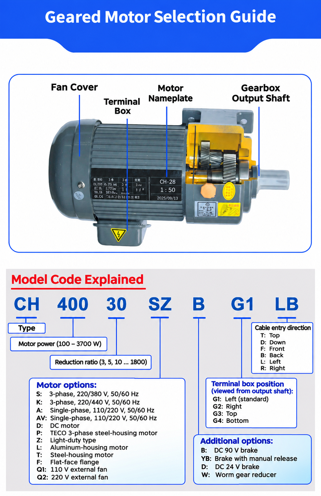

Read the GH32-400W-200S Code
| Code | Meaning |
|---|---|
| GH | Horizontal, foot-mounted configuration |
| 32 | Gearbox size code |
| 400W | Motor power of 400 W (0.4 kW) |
| 200S | 200:1 reduction ratio; retain the full code when ordering |
GH vs GV: What's the Difference?
GH — Horizontal Foot Mounting
GH units bolt to a base or machine frame. Check the foot mounting-hole spacing and output-shaft centre height.
GV — Flange Mounting
GV units bolt to a mating plate or machine housing. Check the flange bolt pattern and locating pilot diameter and projection, where fitted.
For a fuller mounting comparison, read the GH vs GV geared motor mounting guide.
What Is the Output Speed at 200:1?
Divide the motor's rated speed by 200. At 1,400 rpm, the estimated output speed is 7 rpm. This is a speed calculation only; output torque and operating duty still need to be checked.
What to Send for a Replacement Quote
Send the full model number, a clear nameplate photo and a photo of the mounting arrangement. Include the output shaft diameter, shaft extension and keyway dimensions. Confirm motor voltage, phase and frequency from the nameplate.
Can motor power alone identify a replacement?
No. You also need the full model, ratio, mounting arrangement and output-shaft dimensions.